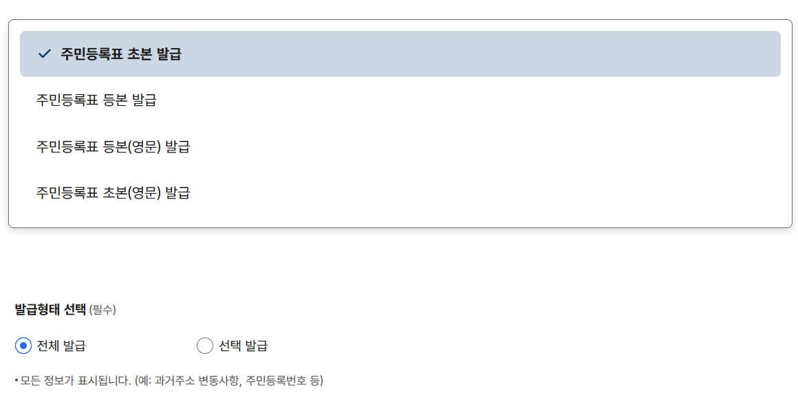
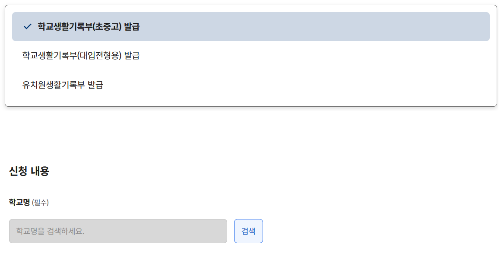

대입 지원 자주 묻는 질문
내용에 오류가 있을 수 있습니다. 본인 대학 가는 것이니 반드시 본인이 다시 정확히 찾아보세요.
대학 꼭 가자!! 대학 지원할 때 자주 묻는 질문
모집요강은 어떻게 확인해야 하나요?
1) 인터넷에서 대충 검색 절대 금지, '서울대학교 입학'처럼 검색해서 그 대학의 입학 홈페이지 들어가기
2) 올해 모집요강 찾기
3) 본인이 지원하려는 전형 이름을 정확하게 확인, 그리고 모집요강에서 그 전형에 관한 세부 설명 부분 찾기
4) 세부 설명에서 '지원자격' 확인하기: 지원자격에 '추천을 받은 자' 있으면 내용 정확히 확인 필요합니다.
5) 세부 설명에서 '제출서류' 확인하기: 어떤 서류 필요한지, 언제까지 내야 하는지, 어떻게 내야 하는지 확인해 주세요.
(제출서류는 세부 설명 말고 다른 곳에 있을수도 있으니, 세부 설명에서 안 보이면 모집요강 목차 보고 서류 목록 확인해 주세요.)
6) 전형 일정 확인하기: 서류 제출 마감일, 면접일, 합격자 발표일 등 확인해 주세요.
7) 제출서류 양식 찾아서 확인하기
(보통 모집요강 맨 뒤에 있고, 모집요강에 양식이 없다면 입학 홈페이지 어딘가에 양식이 업로드되어 있습니다.)
원서 접수는 어떻게 하나요?
1) 모집요강을 반드시 먼저 최종 점검하기
2) 원서접수 사이트에 접속하여 지원하려는 전형/학과를 정확하게 확인한 후 결제창으로 넘어가기
(예를 들어 '일반고'와 '일반전형'은 다릅니다. '정원 외' 전형과 '정원 내' 전형은 다릅니다. 결제한 원서는 취소가 불가하므로 반드시 잘 확인해야 합니다.)
3) 학생부 온라인 동의여부에 '동의'하지 않으면 대학으로 생활기록부가 전송되지 않습니다. 꼭 동의해 주세요.
4) 결제 완료 후 반드시 수험번호를 확인합니다.
5) 경쟁률을 비교해보고 지원하고 싶은 학교는 마감일을 체크하고, 최종 경쟁률 발표 시간도 함께 확인해주세요.
관련 서류는 어떻게 제출해야 하나요?
1) 원서 결제 후 원서접수 사이트에서 필요한 서류 목록 확인
2) 대학별 요구사항 반영하기
(생기부 위에 수험번호 쓰라는 경우, 학교 주소 쓰라는 경우도 있습니다.대학별 모집요강에서 꼭 확인해 주세요.)
3) 서류 완성되면 선생님에게 들르기
4) 이후 표지 봉투에 서류 하나하나 체크하면서 봉투에 넣기
5) 우체국에 가서 "빠른 등기-익일특급"으로 보내기
농어촌 특별전형 지원자격 확인서는 어떻게 받나요?
대학마다 서류 양식과 이름 모두 다르므로 반드시 확인해 주세요.
대학마다 서류 제출 방법과 날짜도 다르므로 반드시 확인해 주세요.
지원자격 확인서에 학교장 직인 필요한 경우에는 일단 다 작성하고, 필요 서류 다 준비해 놓고, 그 후에 선생님에게 꼭 이야기해 주세요.
주민등록표 초본은 어떻게 발급받나요?
정부24 - 주민등록표 등본(초본) 발급 바로가기 (클릭)
'주민등록표 초본' 반드시 체크, 발급 형태에서 '전체 발급' 반드시 체크 (선택 발급하면 과거 주소 확인이 안 돼서 농어촌 전형 지원 자격 확인이 불가능합니다.)

초중고 학교생활기록부는 어떻게 발급받나요?
정부24 - 유치원 및 초중등학교 학교(유치원)생활기록부 증명 발급 바로가기 (클릭)
'학교생활기록부(초중고)' 반드시 체크 (대입전형용 절대 아닙니다.)
초등학교 생기부: 학교명에 본인 졸업한 초등학교 검색해서 입력
중학교 생기부: 학교명에 본인 졸업한 중학교 검색해서 입력
고등학교 생기부: 학교명에 우리 고등학교 검색해서 입력
